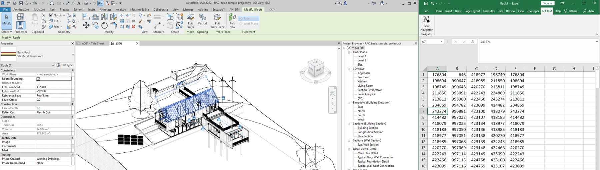

RevitNavigator
From a list in Excel to the elements in Revit
Reports and checks often end up as a spreadsheet of element IDs, and finding them in the model means pasting them one by one. With RevitNavigator, you select the cells in Excel and click one button in the ribbon, and Revit selects those elements in the active view. An Excel add-in and a Revit add-in talk through a shared file, and one installer deploys both for the right Revit version.
How it works
In use

Revit and Excel side by side, on Autodesk's sample project: the IDs selected in Excel are selected in the model.
Design decisions
A simple bridgeA shared text file connects two Office and Revit processes with no server.
One installerSetup deploys both add-ins and matches the installed Revit version.